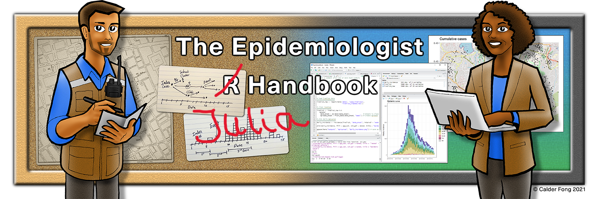

The Epidemiologist Julia Handbook

Julia for applied epidemiology and public health
Usage: This handbook has been used over 0 million times by 0 people around the world.
Objective: Serve as a quick Julia code reference manual (online and offline) with task-centered examples that address common epidemiological problems.
Languages: none so far
Written by epidemiologists, for epidemiologists

Applied Epi is a nonprofit organisation and grassroots movement of frontline epis from around the world. We write in our spare time to offer this resource to the community.
Your encouragement and feedback is most welcome:
- Visit our website and join our contact list
- contact@appliedepi.org, tweet @appliedepi, or LinkedIn
- Submit issues to our Github repository
We offer live training from instructors with decades of applied epidemiology experience - email us to discuss.
How to use this handbook
- Browse the pages in the Table of Contents, or use the search box
- Click the “copy” icons to copy code
- You can follow-along with the example data
Offline version
See instructions in the Download handbook and data page.
Acknowledgements
This handbook is produced by an independent collaboration of epidemiologists from around the world drawing upon experience with organizations including local, state, provincial, and national health agencies, the World Health Organization (WHO), Doctors without Borders (MSF), hospital systems, and academic institutions.
This handbook is not an approved product of any specific organization. Although we strive for accuracy, we provide no guarantee of the content in this book.
Contributors
Editor: Alex Spina
Authors:
Reviewers and supporters:
Illustrations:
Funding and support
This book was funded by Applied Epi.
Inspiration
The multitude of tutorials and vignettes that provided knowledge for development of handbook content are credited within their respective pages.
More generally, the following sources provided inspiration for this handbook:
The Epidemiologist R Handbook
R for Data Science book (R4DS)
Quarto guide
Terms of Use and Contribution
License
 Applied Epi Incorporated, 2021
Applied Epi Incorporated, 2021
This work is licensed by Applied Epi Incorporated under a Creative Commons Attribution-NonCommercial-ShareAlike 4.0 International License.
Academic courses and epidemiologist training programs are welcome to contact us about use or adaptation of this material (email contact@appliedepi.org).
Citation
Contribution
If you would like to make a content contribution, please contact with us first via Github issues or by email. We are implementing a schedule for updates and are creating a contributor guide.
Please note that the epiRhandbook project is released with a Contributor Code of Conduct. By contributing to this project, you agree to abide by its terms.